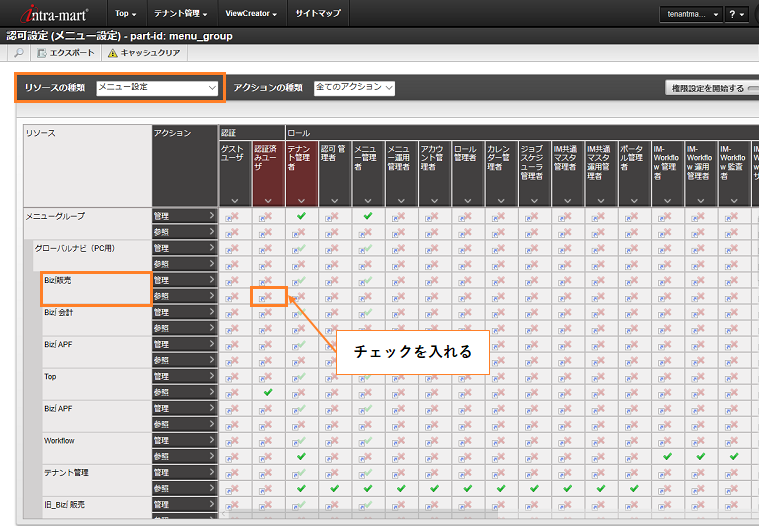
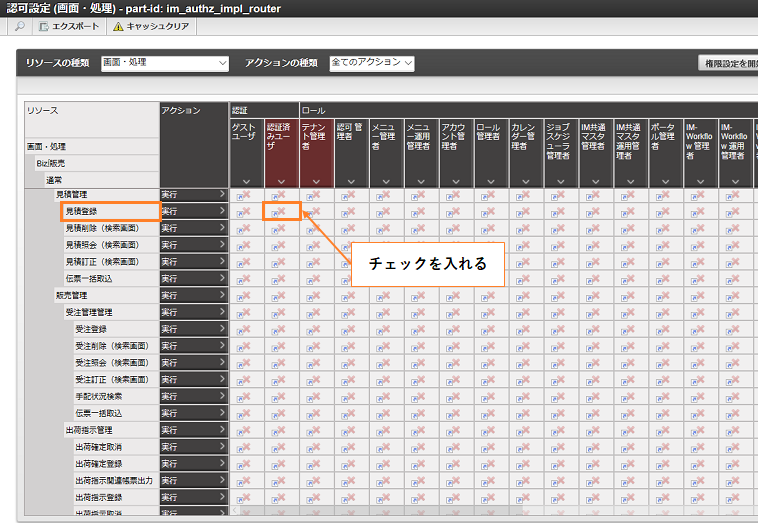
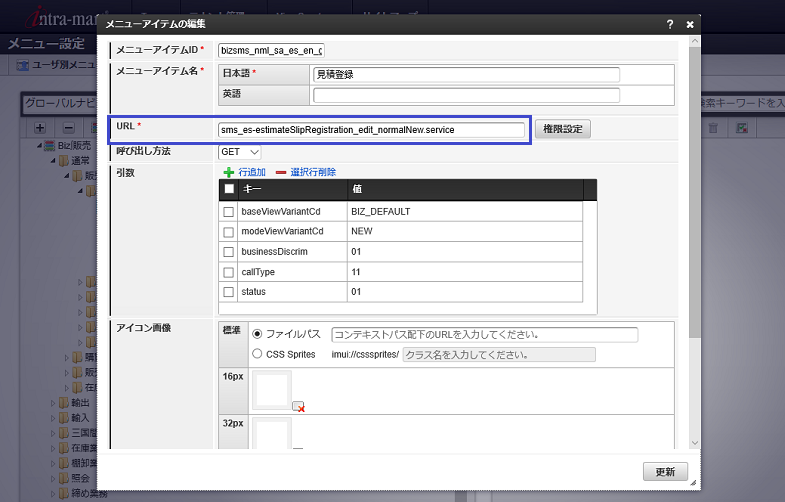
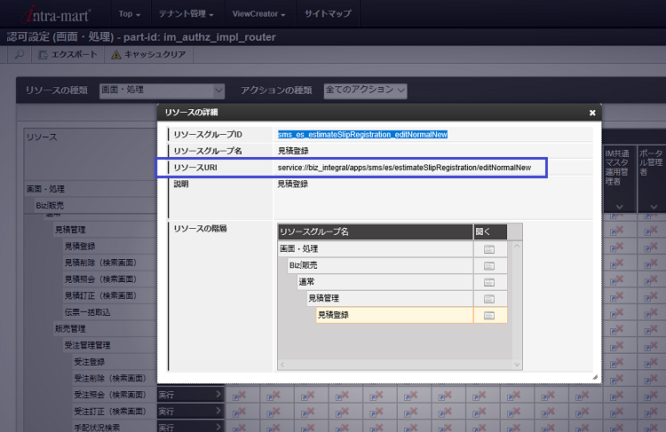

メニューを設定する¶
はじめに¶
ここでは、Biz∫販売のメニューの設定手段を説明します。
コラム
- 認可、メニューはintra-martの機能であり準拠しております。
- キーワードや詳細な設定方法に関しては、あらかじめintra-mart社が提供している『テナント管理者操作ガイド』の認可、メニューをご参照ください。
１．メニューの登録方法¶
メニュー登録は、以下の2つの方法があります。
No 登録方法 利用判断 概要 1 画面からの登録 対象メニューが少ない場合に利用
2 メニューグループXMLをバッチ処理で登録 対象メニューが多い場合に利用
XMLファイルサンプル¶
<?xml version="1.0" encoding="UTF-8"?> <root xmlns="http://www.intra-mart.jp/im_menu/menu-group-data"> <menu-group-data id="bizsms_sm-pc"> <category id="im_sitemap_pc"/> <menu-item menu-id="bizsms_sm-pc" sort-number="0" type="folder" method="get" use-iframe="false" use-popup="false"> <display-names> <display-name locale="ja">Biz∫ 販売</display-name> </display-names> <menu-item menu-id="bizsms_nml_sm-pc" sort-number="200" type="folder" method="get" use-iframe="false" use-popup="false"> <display-names> <display-name locale="ja">通常</display-name> </display-names> <menu-item menu-id="bizsms_nml_sa_sm-pc" sort-number="300" type="folder" method="get" use-iframe="false" use-popup="false"> <display-names> <display-name locale="ja">販売管理</display-name> </display-names> <menu-item menu-id="bizsms_nml_sa_ac_sm-pc" sort-number="1100" type="folder" method="get" use-iframe="false" use-popup="false"> <display-names> <display-name locale="ja">受注管理</display-name> </display-names> <menu-item menu-id="bizsms_nml_sa_ac_en_sm-pc" sort-number="1200" type="folder" method="get" use-iframe="false" use-popup="false"> <arguments> <argument key="baseViewVariantCd" value="BIZ_DEFAULT"/> <argument key="modeViewVariantCd" value="NEW"/> <argument key="businessDiscrim" value="01"/> <argument key="callType" value="11"/> <argument key="status" value="01"/> </arguments> <display-names> <display-name locale="ja">受注登録</display-name> </display-names> </menu-item> </menu-item> </menu-item> </menu-item> </menu-item> </menu-group-data> </root>
３．認可¶
メニューを使用するためには、認可設定が必要です。
①メニューグループの認可（参照権限の付与）②メニューアイテムリソースの認可③画面が使用しているダイアログなどの認可コラム
①の設定がされていない場合、参照権限が付与されていないユーザにはそのメニューグループ自体が表示されません。
例：グローバルナビのBiz∫販売 > 見積登録を認証済みユーザに操作可能とするための認可設定¶
- ①メニューグループ「Biz∫販売」の認可を設定する
認可設定画面（メニュー操作：テナント管理 > 認可）にて「リソースの種類」を”メニュー設定”とし、一覧内の「認証済みユーザ」／メニューグループ「Biz∫販売」の参照にチェックをつけ有効にする。

- ②メニューアイテムリソース（見積登録）の認可を設定する
認可設定画面にて「リソースの種類」を”画面・処理”とし、一覧内の「認証済みユーザ」、メニューアイテム「見積登録」の実行権限にチェックを入れ有効にする。

③画面が使用しているダイアログなどの認可を設定する
Biz∫販売を利用するユーザに対し、以下の認可を設定します。（全てが必要となるわけではありませんが、共通リソース設定として利用する全てのユーザに共通設定しておくと運用が容易です。）
- Biz∫販売 > 共通 配下の全て
- Biz∫販売 > ダイアログ 配下の全て
- Biz∫販売 > 禁止 配下の全て
- Biz∫APF > マスタ管理 > プロジェクトダイアログ（※プロジェクトを利用する場合）
コラム
４．URLマッピング¶
Biz∫販売では、メニュー設定画面で指定するURLとメニューアイテムリソースはモジュール単位に保持しているURLマッピングファイル『sms_xx-service-url-mapping.xml』で関連付けられています。
例：見積伝票登録画面（新規）の設定¶
URLマッピングファイル『sms_es-service-url-mapping.xml』
ファイルは各モジュールのjarファイル中に含まれます。『sms_xx-service-url-mapping.xml』の定義は、それぞれ以下の情報に紐づきます。- メニューアイテムのURL ： url=”/sms_es-estimateSlipRegistration_edit_normalNew.service”
- 認可のリソースURI ： resource-uri=”service://biz_integral/apps/sms/es/estimateSlipRegistration/editNormalNew”
<?xml version="1.0" encoding="UTF-8"?> <service-url-mapping> <mappings> <mapping url="/sms_es-estimateSlipRegistration_edit_normalNew.service" application="sms_es" service="rad_run" resource-uri="service://biz_integral/apps/sms/es/estimateSlipRegistration/editNormalNew" > <param key="applicationId" value="sms" /> <param key="moduleId" value="es" /> <param key="domainCd" value="estimateSlipRegistration" /> <param key="activityCd" value="edit" /> </mapping> ※中略 <mapping url="/sms_es-estimateSlipSearch_search_reference.service" application="sms_es" service="rad_run" resource-uri="service://biz_integral/apps/sms/es/estimateSlipSearch/searchReference" > <param key="applicationId" value="sms" /> <param key="moduleId" value="es" /> <param key="domainCd" value="estimateSlipSearch" /> <param key="activityCd" value="search" /> </mapping> </mappings> </service-url-mapping>
メニューアイテムのURL

認可のリソースURI

５．メニュー追加手順（画面起動のパラメータが異なる場合）¶
業務識別区分が追加となる場合など、画面への引き渡しパラメータが初期データと異なる場合は、以下の作業を実施します。
①URLマッピングファイルの作成②画面リソースの登録③メニュー登録④認可設定コラム
(参考) 業務識別区分を分ける例初期データでは、通常/輸出/輸入という分類で業務識別区分が定義されています。案件によっては、「受注 > 売上の計上が必須な業務と売上のみでよい業務を別々に管理したい」といったニーズがある場合があります。こういう場合に対応の仕方はいくつかありますが、業務識別区分を分けることで管理する方法が有力な案となります。
例：見積登録画面（業務識別区分：11）の追加¶
①URLマッピングファイルの作成 ※url、resource-uriの値はサンプル
<?xml version="1.0" encoding="UTF-8"?> <service-url-mapping> <mappings> <mapping url="/sms_es-estimateSlipRegistration_edit_11New.service" application="sms_es" service="rad_run" resource-uri="service://biz_integral/apps/sms/es/estimateSlipRegistration/edit11New"> <param key="applicationId" value="sms" /> <param key="moduleId" value="es" /> <param key="domainCd" value="estimateSlipRegistration" /> <param key="activityCd" value="edit" /> </mapping> ※中略 </mappings> </service-url-mapping>Attention
Biz∫販売の各モジュールのURLマッピングファイルは、モジュールのjarファイルの中にあります。そのため、標準モジュールに対して新たなURLマッピング定義を行う場合は、jarファイル内のsms_xx-service-url-mapping.xmlをコピーし、URLマッピング定義の追加を行った後、サーバの以下のディレクトリにファイルを配置する必要があります。(resinインストールパス)/webapps/(プロジェクト名)/WEB-INF/classes※追加したURLマッピング定義を有効にするためには、ファイル配置後にAPサーバの再起動が必要です。
②画面リソースの登録
リソースURIに ①URLマッピングファイルの作成 で登録したresource-uriと同じ値を設定したリソースを登録します。
コラム
- ここではxmlファイルを用いたバッチ登録例を記載しておりますが、画面登録でも構いません。
コラム
『authz-resource.xml』の作成
<?xml version="1.0" encoding="UTF-8"?> <root xmlns="http://www.intra-mart.jp/authz/imex/resource"> <authz-resource id="sms_es_estimateSlipRegistration_edit11New" uri="service://biz_integral/apps/sms/es/estimateSlipRegistration/edit11New"> <display-name> <name locale="ja">見積登録（新規：業務識別区分11）</name> </display-name> <resource-description> <description locale="ja">見積登録（新規：業務識別区分11）</description> </resource-description> <parent-group id="010_sms_11_es"/> </authz-resource> </root>『authz-resource-group.xml』の作成
<?xml version="1.0" encoding="UTF-8"?> <root xmlns="http://www.intra-mart.jp/authz/imex/resource"> <authz-resource-group id="110_sms_11"> <display-name> <name locale="ja">業務識別区分11</name> </display-name> <resource-group-description> <description locale="ja">業務識別区分11</description> </resource-group-description> <parent-group id="sms"> </parent-group> </authz-resource-group> <authz-resource-group id="010_sms_11_es"> <display-name> <name locale="ja">見積管理</name> </display-name> <resource-group-description> <description locale="ja">見積管理</description> </resource-group-description> <parent-group id="110_sms_11"> </parent-group> </authz-resource-group> </root>作成したファイルをサーバ上の取込ファイル配置用パスに配置（メニュー：テナント管理 > ファイル操作）
取込ジョブの実行（メニュー：テナント管理 > ジョブ管理 > ジョブネット設定）
取込は、リソースグループ(authz-resource-group.xml)、リソース(authz-resource.xml)の順で実行する必要があります。
③メニュー登録
メニューアイテムのURLに ①URLマッピングファイルの作成 で作成したresource-uriと同じ値を設定します。引数のbusinessDiscrimに追加対象の値（本例では11）を指定します。※メニューグループ、メニューフォルダは必要に応じて追加してください。
④認可設定